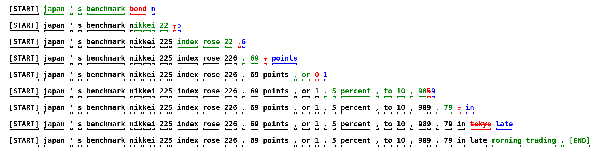
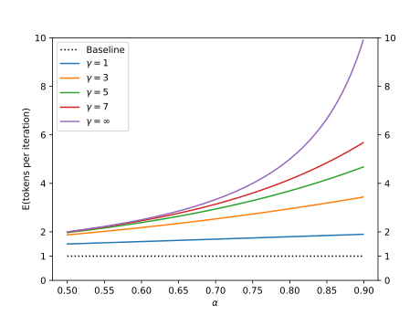
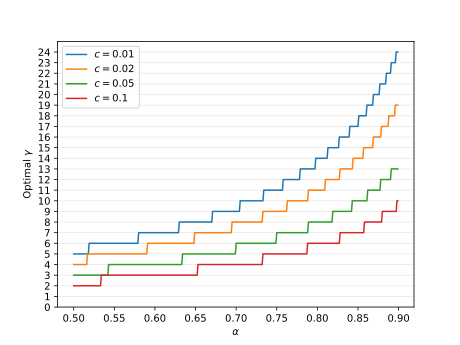
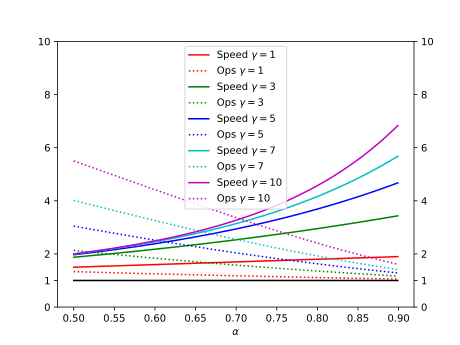
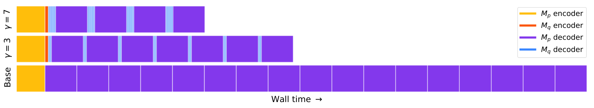

用投机解码加速 Transformer 推理
Fast Inference from Transformers via Speculative Decoding
论文没有发布官方代码。阅读状态、进度与收藏只保存在你的浏览器里。
逐节精读
这部分按论文的章节顺序，用本站自己的话把整篇论文从头讲一遍。读懂某个概念需要的背景知识，会在第一次用到它之前单独讲清楚（青色框）。每个结论都尽量说出“因为什么、所以什么”。论文以 CC BY 4.0 发布，所以原图直接放在讲到它的地方，并说明这张图怎么看；原图没画到的概念，用本站的示意图补上。标“推算”的数字是本站根据论文的公式或数据算出来的，不是论文原话。每节末尾有英文原文的链接。
0 导读：这篇论文解决什么问题
大语言模型生成文字的方式是“接龙”：先生成第 1 个 token，把它接到输入后面，再生成第 2 个，如此反复。生成 \(K\) 个 token，就要把整个模型从头到尾串行地跑 \(K\) 遍。模型越大，每跑一遍越慢，于是用户等待的时间（延迟）就越长。
这篇论文抓住了两个事实。第一，大模型每跑一遍，时间主要花在把参数从显存搬到计算单元上，而不是花在计算上。所以只要一次前向能顺便多检查几个位置，时间几乎不变。第二，一句话里有很多 token 其实很好猜，比如一个词的后半截、固定搭配、标点，一个小得多的模型也能猜对。把这两点合起来，就得到了投机解码：先让小模型快速猜出接下来的 \(\gamma\) 个 token（草稿），再让大模型跑一遍，同时检查这 \(\gamma\) 个猜测；猜对的直接收下，第一个猜错的位置由大模型改正。猜对得越多，大模型跑一遍产出的 token 就越多。
难点不在“猜”，而在“收”。如果只是“小模型猜的和大模型想的差不多就收下”，输出就会变味，不再是大模型自己会写出的东西。论文的核心贡献是一个新的采样规则，叫投机采样（speculative sampling）：它按一个精心设计的概率接受或拒绝每个猜测，被拒绝时从一个“修正过的分布”里补采一个 token。可以严格证明，不管小模型猜得多差，最终输出的每个 token 都和大模型自己一个一个采样的分布完全相同。小模型的好坏只影响速度，不影响结果。
在 Google 的 T5-XXL（110 亿参数）上，用现成的 T5-small 当小模型，在批大小为 1 的设置下，翻译任务快了 3.4 倍、摘要任务快了 3.1 倍，而且不需要重新训练任何模型，也不改模型结构。
读完这部分，你应该能回答这几个问题：
- 为什么大模型“检查 8 个 token”和“生成 1 个 token”花的时间差不多？
- 投机采样的接受、拒绝、补采三步各是什么？为什么被拒绝后不能直接从大模型的分布重新采样？
- 接受率 \(\alpha\) 是什么，怎么从两个模型的分布算出来？每跑一次大模型平均能产出几个 token？
- 每次猜几个（\(\gamma\)）最合适？小模型的开销（代价系数 \(c\)）怎么影响加速比？
- 这种加速是用什么换来的？为什么批很大的时候它会失效？
- DeepMind 的同期工作做了什么？后来 Medusa、EAGLE 和各个推理引擎是怎么接着做的？
- \(M_p\)：目标模型（target model），也就是我们真正想要它输出的大模型；它在前缀 \(x_{<t}\) 后给出的下一个 token 分布记为 \(p(x_t\mid x_{<t})\)，简写 \(p(x)\)。
- \(M_q\)：近似模型（approximation model），后来大家更常叫它草稿模型（draft model），是一个快得多的小模型；它的分布记为 \(q(x)\)。
- \(\gamma\)：每一轮让草稿模型猜几个 token。
- \(\beta\)：在某个前缀下，一个草稿 token 被接受的概率；\(\alpha=E(\beta)\) 是它的平均值，称为接受率。
- \(c\)：代价系数，草稿模型跑一步的时间 ÷ 目标模型跑一步的时间。
1 引言：串行解码为什么慢，空闲的算力在哪里
模型的参数存在 GPU（或 TPU）的显存里，计算单元在芯片上。每跑一遍模型，都得把全部参数从显存读到计算单元一次。以一个 130 亿参数、用 FP16 存储的模型为例，参数一共 26 GB。A100-40GB 的显存带宽约 1.555 TB/s（NVIDIA 官方规格），光把参数读一遍就要约 16.7 毫秒（推算）。
再看计算量。处理一个 token，大约每个参数要做一次乘法和一次加法，共 2 × 130 亿 = 260 亿次浮点运算。A100 的 FP16 矩阵算力约 312 TFLOPS（官方规格），算完只要约 0.08 毫秒（推算）。也就是说，生成一个 token 时，芯片有 99% 以上的时间在等数据，几乎是闲着的。这种状态叫受显存带宽限制（memory-bound）。
关键的推论是：如果一次前向不是处理 1 个位置，而是同时处理 8 个位置，参数仍然只需要读一遍，计算量变成 8 倍，也只有约 0.67 毫秒（推算），总时间几乎不变。直到同时处理的位置多到约 200 个（312 ÷ 1.555 ≈ 200），计算时间才追上读参数的时间。这个“每读一个字节能做多少次运算才不浪费”的分界点，常被叫作屋顶线模型的拐点（详见 推理基础页的屋顶线一节）。
论文的出发点正是这一点：大模型推理的瓶颈常常不是算术运算，而是显存带宽和芯片之间的通信，所以手头往往还有多余的算力。既然多处理几个位置几乎不花时间，那就应该想办法让一次前向产出多个 token。
可是这里有一个根本矛盾：第 \(t+1\) 个 token 的分布依赖第 \(t\) 个 token 是什么，而第 \(t\) 个 token 还没采样出来。要想同时处理第 \(t\)、\(t+1\)、\(t+2\) 个位置，就必须先知道（或者猜出）前面的 token。
CPU 执行程序时常遇到 if 分支：要等条件算出来，才知道接下来执行哪段代码。如果干等，流水线就会空转。现代 CPU 的做法是分支预测：先猜一个最可能的分支，马上接着执行下去；等条件真正算出来，如果猜对了，提前做的工作直接生效，省下了等待时间；如果猜错了，就把提前做的工作扔掉，回到正确的分支重新执行。这种“边做边验证要不要做”的技术叫投机执行（speculative execution）。它要划算，需要满足两个条件：猜得足够准，猜错的代价可以承受。
作者把这个思路搬到了文字生成上，但要做一个关键的推广。CPU 的分支是确定的：条件要么真要么假，验证就是比对。语言模型生成文字往往是随机采样的，下一个 token 本身就是一个概率分布，不存在唯一“正确”的答案。所以作者要回答的是：在随机的情况下，怎么判断一个猜测“该不该收下”，才能保证最终结果的概率分布不变？论文把这叫作“随机情形下的投机执行”，并给出了答案，即后面要讲的投机采样。
谁来猜呢？作者的另一个观察是：难的语言建模任务里往往包含很多容易的子任务。比如前文已经出现 “japan ' s benchmark”，下一个词是 “nikkei” 几乎是确定的；一个数字写了一半，后半截也好猜。这些位置用一个小几百倍的模型就能猜对。于是方案是：用小的近似模型 \(M_q\) 生成一段草稿，作为大的目标模型 \(M_p\) 的“投机前缀”，再让 \(M_p\) 一次并行地验证。

论文先回顾了当时加速推理的两类方法。第一类对所有输入一视同仁地降低成本：蒸馏、稀疏化、量化、修改结构（比如多查询注意力）。第二类叫自适应计算（adaptive computation），思路和本文相近：难的步骤多算、容易的步骤少算，例如在中间层“提前退出”。但这类方法通常要改结构、改训练流程、重新训练模型，而且输出会和原模型不同。
本文的定位是一种互补的办法：不减少每一步的计算，而是提高并发度，让多个位置同时处理。它的三个“不需要”是全文反复强调的卖点：不改模型结构、不改训练流程也不用重新训练、不改变输出分布。现成的大小两个模型拿来就能用。
作者在三类设置上分析了方法：在 lm1b 上训练的 9700 万参数 GPT 式模型做无条件生成；110 亿参数的 T5-XXL 做英译德和新闻摘要；1370 亿参数的 LaMDA 做对话。其中只有 T5-XXL 真正实现了算法并测了耗时，和当时很成熟的 T5X 实现相比，延迟降低到 1/2–1/3（2–3 倍加速），输出不变。论文的两条贡献是：（1）把投机执行推广到随机情形，提出投机采样；（2）基于它的解码机制，即投机解码。
- “输出不变”指的是分布不变。用贪心解码（每步取概率最大的 token）时，投机解码给出的 token 序列和目标模型自己贪心解码完全一样（在硬件数值误差范围内）。用随机采样时，单次输出的具体内容取决于随机数，两种方法不会逐字相同，但“写出每一种句子的概率”完全相同。
- 本文加速的是单个请求的延迟，前提是算力有富余。它不是减少计算量的方法，恰恰相反，总计算量会变多（§3.4）。
2 方法：草稿、并行验证与投机采样
2.1 一轮投机解码的整体流程
设目标模型 \(M_p\) 在前缀 \(x_{<t}\) 后给出分布 \(p(x_t\mid x_{<t})\)，近似模型 \(M_q\) 给出 \(q(x_t\mid x_{<t})\)。一轮分三步：
- 打草稿。用 \(M_q\) 自回归地生成 \(\gamma\) 个 token。因为 \(M_q\) 很小，这 \(\gamma\) 步加起来也很快。每一步除了采出的 token，还要记下 \(M_q\) 在这一步的完整分布 \(q_i\)，后面验证要用。
- 并行验证。把前缀和 \(\gamma\) 个草稿一起送进 \(M_p\)，跑一次前向。因为 Transformer 的因果掩码让每个位置只看它前面的内容，这一次前向会同时给出 \(\gamma+1\) 个位置的分布：在原前缀后、在前缀加第 1 个草稿后……一直到在前缀加全部 \(\gamma\) 个草稿后。这正是上一节说的“多处理几个位置几乎不花时间”。
- 接受与修正。从左到右逐个判断草稿 token 能不能接受（规则见 §2.3）。遇到第一个被拒绝的位置，就从一个调整过的分布里补采一个 token 代替它，后面的草稿全部作废。如果 \(\gamma\) 个全被接受，就从最后那个位置的分布 \(p_{\gamma+1}\) 里再免费多采一个。
这个设计有一个很好的下限：每一轮目标模型都至少贡献 1 个 token，所以无论草稿多差，目标模型的串行运行次数都不会比普通解码多。至于真实耗时会不会变慢，要看草稿模型本身花的时间和验证多个位置的额外开销，§3.3 会定量分析。
2.2 把各种采样方式统一成“从一个分布里采样”
模型最后一层输出的是每个候选 token 的分数（logits），经过 softmax 变成概率分布。实际使用时，常对这个分布做一些调整再采样：
- 贪心（argmax）：总是选概率最大的那个 token。
- 温度 \(T\)：把 logits 除以 \(T\) 再做 softmax。\(T\) 小于 1 时分布变“尖”，高概率的更高；\(T\) 大于 1 时分布变“平”。论文实验里的 temp=0 指贪心，temp=1 指按原分布采样。
- top-k / nucleus（top-p）：只保留概率最高的 k 个，或累积概率达到 p 的最少几个 token，其余置零后重新归一化，再采样。
各个代码库往往在 logits 层面用不同的方式实现这些技巧，看起来五花八门。论文指出，它们都可以看作“先把分布调整一下，再从调整后的分布里做标准采样”。例如贪心，等价于把除最大值以外的概率全部置零再归一化，得到一个只在最大值处为 1 的分布（称为 one-hot 分布）。
所以后面只需要处理一种情况：从一个概率分布里做标准采样。下文的 \(p\) 和 \(q\) 都是按同一种采样方式调整过的分布。投机采样保证的，是输出服从调整后的 \(p\)，也就是“目标模型在这种采样设置下会给出的分布”。
2.3 投机采样：接受、拒绝与补采
假设我们想从分布 \(p\) 采样，但手头只有一个容易采样的分布 \(q\)。统计学里的经典做法叫拒绝采样：找一个常数 \(M\)，使得对所有 \(x\) 都有 \(p(x)\le M\,q(x)\)（通常取 \(M=\max_x p(x)/q(x)\)）。然后反复执行：从 \(q\) 采一个 \(x\)，以概率 \(p(x)/(M\,q(x))\) 接受它；不接受就从头再来，直到接受为止。最后接受的 \(x\) 恰好服从 \(p\)。
它的问题是可能要来回很多次，每次接受的概率平均只有 \(1/M\)。如果 \(q\) 在某个 token 上严重低估了 \(p\)，\(M\) 就很大，几乎每次都被拒绝。对投机解码来说，一次被拒就意味着这一轮后面的猜测全部白费，我们没有“反复再试”的余地。所以需要一个只试一次、而且接受概率尽可能高的版本。
论文的规则只有一次尝试，分两种情况：
- 从 \(q\) 采到的 token \(x\)，如果 \(q(x)\le p(x)\)，说明草稿模型在这个 token 上没有高估，就直接接受。
- 如果 \(q(x)>p(x)\)，说明草稿模型高估了它，就以概率 \(1-p(x)/q(x)\) 拒绝（换句话说，以概率 \(p(x)/q(x)\) 接受）。
- 一旦拒绝，就从下面这个修正分布里重新采一个 token：
两种情况可以合写成一句：以概率 \(\min\!\big(1,\,p(x)/q(x)\big)\) 接受。修正分布 \(p'\) 只保留了“\(p\) 比 \(q\) 多出来的那部分”，也就是草稿模型低估的那些 token。直觉上：草稿模型高估的 token，多出来的那部分概率被拒绝掉了；这些被拒绝掉的概率，正好被重新分配给草稿模型低估的 token。下面用一个三个词的小例子把这件事算一遍。
算一个例子。假设词表只有 A、B、C 三个 token。目标模型的分布是 \(p=(0.5,\,0.3,\,0.2)\)，草稿模型的分布是 \(q=(0.2,\,0.2,\,0.6)\)：草稿模型低估了 A 和 B，严重高估了 C。
| token | \(p\) | \(q\) | 接受概率 \(\min(1,p/q)\) | 草稿是它且被接受 | 草稿是它但被拒绝 | \(\max(0,p-q)\) | 修正分布 \(p'\) |
|---|---|---|---|---|---|---|---|
| A | 0.5 | 0.2 | 1 | 0.2 × 1 = 0.2 | 0 | 0.3 | 0.75 |
| B | 0.3 | 0.2 | 1 | 0.2 × 1 = 0.2 | 0 | 0.1 | 0.25 |
| C | 0.2 | 0.6 | 1/3 | 0.6 × 1/3 = 0.2 | 0.6 × 2/3 = 0.4 | 0 | 0 |
| 合计 | 1 | 1 | 0.6 | 0.4 | 0.4 | 1 |
逐行读这张表：
- 草稿采到 A 的概率是 0.2，因为 \(q(A)\le p(A)\)，一定接受，所以“输出 A 且来自接受”的概率是 0.2。B 同理，是 0.2。
- 草稿采到 C 的概率是 0.6，但 \(q(C)=0.6>p(C)=0.2\)，只以 \(0.2/0.6=1/3\) 的概率接受，所以“输出 C 且来自接受”的概率是 0.2；剩下 0.4 的情况被拒绝。
- 被拒绝时，从修正分布采样。\(\max(0,p-q)=(0.3,\,0.1,\,0)\)，总和 0.4，归一化后是 \((0.75,\,0.25,\,0)\)。
- 把两条路加起来：输出 A 的总概率 = 0.2 + 0.4 × 0.75 = 0.5；输出 B = 0.2 + 0.4 × 0.25 = 0.3；输出 C = 0.2 + 0 = 0.2。正好就是 \(p\)。
为什么被拒绝后不能直接从 \(p\) 重新采样？这是最容易想错的地方。假如被拒绝后直接从 \(p=(0.5,0.3,0.2)\) 采样，那么输出 C 的概率会变成 0.2 + 0.4 × 0.2 = 0.28，比 \(p(C)=0.2\) 多；输出 A 的概率变成 0.2 + 0.4 × 0.5 = 0.4，比 0.5 少。原因是：接受这一步已经给了每个 token \(\min(p,q)\) 的概率，C 的“份额” 0.2 已经给满了；如果补采时还按 \(p\) 给 C 分一份，C 就被算了两次。修正分布只包含“还没给够”的那部分 \(p-\min(p,q)=\max(0,p-q)\)，所以补完之后每个 token 恰好得到 \(p\)。
一般情况的证明（论文附录 A.1）和上面的算术一模一样。记 \(\beta=\sum_x\min(p(x),q(x))\) 为接受的总概率。最终输出 \(x'\) 的概率来自两条路：
第二项的关键是：修正分布的归一化常数 \(\sum_{x}\max(0,p(x)-q(x))\) 恰好等于被拒绝的总概率 \(1-\beta\)（因为 \(p\) 和 \(q\) 的总和都是 1），两者相消。这个推导对任意 \(p\)、\(q\) 都成立，没有用到“\(q\) 要接近 \(p\)”之类的条件。所以草稿模型的好坏只决定 \(\beta\) 有多大，也就是速度，不影响正确性。
贪心解码是一个特例。此时 \(p\) 和 \(q\) 都是 one-hot。如果两个模型的最大值落在同一个 token 上，\(p=q\)，一定接受；如果不在同一个 token 上，草稿 token 的 \(p\) 为 0，一定拒绝，而修正分布正好是目标模型的最大值所在的 one-hot 分布。所以贪心时投机采样退化成“逐个比对草稿和目标模型的 argmax，第一个不一致的地方换成目标模型的 argmax”，输出和目标模型自己贪心解码完全一样。
从一个 token 到多个 token。论文先讲两个 token 的情况：从 \(q\) 采出 \(x_1\)；然后让 \(M_p\) 同时计算两个东西：在原前缀后的分布 \(p\)（用来判断 \(x_1\)），以及投机地在“前缀 + \(x_1\)”后的下一个 token 的分布。两个计算并行完成后：如果 \(x_1\) 被拒绝，就扔掉第二个位置的计算，按修正分布重采 \(x_1\)；如果 \(x_1\) 被接受，两个 token 都保留。算法 1 把这个思路推广到 \(\gamma\) 个草稿，一轮产出 1 到 \(\gamma+1\) 个 token。
为什么整段序列的分布也是对的？可以一个位置一个位置地看：第一个输出 token 服从 \(p(\cdot\mid\text{前缀})\)，这是上面证过的。如果它是被接受的草稿 \(x_1\)，那么第二个位置用的是 \(p(\cdot\mid\text{前缀}+x_1)\) 和 \(q(\cdot\mid\text{前缀}+x_1)\)，同样的论证再用一遍；如果第一个位置被拒绝、换成了补采的 token，那么后面的草稿都是以错误的前缀为条件猜出来的，目标模型算出的后续分布也是以错误前缀为条件的，必须全部作废。每个位置都在“正确的前缀”下服从正确的条件分布，乘起来就是目标模型生成整段序列的概率。
2.4 算法 1 逐行走一遍
论文的算法 1（SpeculativeDecodingStep）把一轮写成伪代码。这里按行解释：
- 打草稿：对 \(i=1,\dots,\gamma\)，令 \(q_i(x)\leftarrow M_q(\text{前缀}+[x_1,\dots,x_{i-1}])\)，并采样 \(x_i\sim q_i(x)\)。
- 并行运行目标模型：\(p_1(x),\dots,p_{\gamma+1}(x)\leftarrow M_p(\text{前缀}),\dots,M_p(\text{前缀}+[x_1,\dots,x_\gamma])\)。这 \(\gamma+1\) 个调用在实现上就是一次前向。
- 决定接受几个：独立地取 \(\gamma\) 个均匀随机数 \(r_1,\dots,r_\gamma\sim U(0,1)\)，令
$$n\leftarrow\min\Big(\big\{\,i-1\;\big|\;1\le i\le\gamma,\ r_i>\tfrac{p_i(x_i)}{q_i(x_i)}\big\}\cup\{\gamma\}\Big)$$意思是：找到第一个“随机数大于 \(p/q\)”的位置 \(i\)，也就是第一个被拒绝的草稿，那么前 \(n=i-1\) 个草稿被接受；如果一个都没被拒绝，\(n=\gamma\)。注意当 \(p_i\ge q_i\) 时比值不小于 1，随机数永远不会超过它，对应“没有高估就一定接受”。
- 调整分布：先令 \(p'(x)\leftarrow p_{n+1}(x)\)；如果 \(n<\gamma\)（有草稿被拒绝），改为 \(p'(x)\leftarrow\operatorname{norm}(\max(0,\,p_{n+1}(x)-q_{n+1}(x)))\)。
- 输出：采样 \(t\sim p'(x)\)，返回 \(\text{前缀}+[x_1,\dots,x_n,t]\)：\(n\) 个来自草稿模型，1 个来自目标模型。
算法 1 只描述了采样，没有讨论两个模型的 KV 缓存。实际实现中，目标模型在验证那次前向里已经把 \(\gamma\) 个草稿位置的 key/value 写进了缓存；如果只接受了前 \(n\) 个，只需要把“有效长度”退回到前缀 + \(n\) 个 token，被拒位置的旧数据下一轮会被覆盖，不需要搬动数据；补采的那个 token \(t\) 的 KV 还没算过，下一轮作为输入的一部分再算。草稿模型同样要退回，并用 \(t\) 继续。分页式 KV 缓存（vLLM）下这件事尤其简单，见 结构拆解页 Q8。这部分是本站补充，不是论文内容。
3 分析：能快多少，代价是什么，γ 取多少
3.1 每轮平均产出几个 token
论文先定义接受率 \(\beta_{x_{<t}}\)：在前缀 \(x_{<t}\) 下，从 \(q\) 采出的草稿被投机采样接受的概率。不同前缀下 \(\beta\) 不同：容易的位置接近 1，难的位置可能接近 0。它的平均值 \(\alpha=E(\beta)\) 很自然地衡量了“草稿模型有多像目标模型”。
为了得到一个简单的公式，论文做了一个简化假设：每个位置的 \(\beta\) 独立同分布，都等于 \(\alpha\)。在这个假设下，一轮产出的 token 数是一个有上限的几何分布。推导很直接：
- 一轮至少产出 1 个 token（目标模型给的那个）。
- 能产出第 2 个，当且仅当第 1 个草稿被接受，概率 \(\alpha\)；能产出第 3 个，当且仅当前 2 个都被接受，概率 \(\alpha^2\)……能产出第 \(\gamma+1\) 个，当且仅当 \(\gamma\) 个全被接受，概率 \(\alpha^\gamma\)。
- 期望值等于“每个名额被用上的概率”之和：
这个数同时也是“目标模型串行调用次数减少的倍数”：原来每个 token 调用一次，现在平均每 \(E\) 个 token 调用一次。
算几个数（推算）。取 \(\alpha=0.75\)、\(\gamma=3\)：一轮产出 1、2、3、4 个 token 的概率分别是 0.25、0.1875、0.1406、0.4219（前三项是 \(\alpha^{k-1}(1-\alpha)\)，最后一项是 \(\alpha^3\)），期望 \(=(1-0.75^4)/0.25\approx2.73\)。把 \(\gamma\) 加到 7，期望升到 \((1-0.75^8)/0.25\approx3.60\)。\(\gamma\) 再大也有天花板：\(\gamma\to\infty\) 时期望趋近 \(1/(1-\alpha)=4\)。原因是越靠后的草稿，要求前面所有草稿都被接受才轮得到它，被用上的概率按 \(\alpha^k\) 衰减。

3.2 α 怎么算：两个分布重叠的面积
接受率可以直接从两个分布算出来，不需要真的跑采样。论文先定义了一个散度：
把 \(M\) 代进去，\(|p-M|=|p-q|/2\)，所以 \(D_{LK}(p,q)=\tfrac12\sum_x|p(x)-q(x)|\)。这就是概率论里常说的总变差距离（total variation distance），论文没有用这个名字，只称它“一个自然的散度”。再利用 \(\min(a,b)=\tfrac12(a+b-|a-b|)\) 和 \(\sum p=\sum q=1\)，得到引理 3.3：
由此马上有：\(D_{LK}\) 对称、取值在 0 到 1 之间；等于 0 当且仅当 \(p=q\)；等于 1 当且仅当两个分布没有任何共同的取值。而接受概率按定义是
这是定理 3.5。再对所有前缀取平均，就是推论 3.6：\(\alpha=1-E\big(D_{LK}(p,q)\big)=E\big(\sum_x\min(p,q)\big)\)。
直观理解：把 \(p\) 和 \(q\) 画成两张柱状图叠在一起，两张图重叠部分的面积就是 \(\beta\)。上一节的例子里，重叠部分是 \(\min(0.5,0.2)+\min(0.3,0.2)+\min(0.2,0.6)=0.6\)；用距离公式算，\(D_{LK}=\tfrac12(0.3+0.1+0.4)=0.4\)，\(\beta=1-0.4=0.6\)，两者一致。贪心解码时，\(p\)、\(q\) 都是 one-hot，重叠面积要么是 1 要么是 0，所以 \(\alpha\) 就是“两个模型的 argmax 一致”的比例。
这个公式也解释了一个实验现象（§4.2）：调整后的分布越“尖”（比如温度越低），\(\alpha\) 往往越高。因为两个模型通常对“最可能的那个 token”意见一致，分布越集中在这个 token 上，重叠面积越大。
3.3 真实耗时能快多少：代价系数 c
上面的 \(E\) 只是“目标模型调用次数减少的倍数”。要换算成真实耗时，还得考虑两件事：草稿模型自己也要花时间；目标模型一次验证 \(\gamma+1\) 个位置是否真的和处理 1 个位置一样快。论文对后者直接假设“有足够的算力，可以并行地跑 \(\gamma+1\) 个位置而不增加耗时”，§3.4 和本页 §6 会回头讨论这个假设什么时候不成立。
论文定义代价系数 \(c\) = 草稿模型跑一步的时间 ÷ 目标模型跑一步的时间。和 \(\alpha\) 不同，\(c\) 不是模型和任务的固有属性，它取决于硬件和软件实现。论文实验里草稿模型比目标模型小大约两个数量级，\(c\) 总是小于 0.05，经常接近 0。
设目标模型跑一步耗时 \(T\)。一轮投机解码要跑 \(\gamma\) 次草稿模型和 1 次目标模型，耗时 \(Tc\gamma+T\)，平均产出 \(E\) 个 token。所以平均每个 token 的耗时是 \((c\gamma+1)T/E\)，而普通解码每个 token 耗时 \(T\)。两者之比就是定理 3.8 的加速倍数：
代入论文的实际数值（推算）。翻译任务、贪心、T5-small 当草稿：\(\alpha=0.75\)、\(\gamma=7\)、\(c=0.02\)（\(c\) 取自附录表 4），加速倍数 \(=3.60/(1+0.14)\approx3.16\)，附录表 4 写作 3.2，实测是 3.4。如果草稿模型慢一点，\(c=0.05\)，同样的 \(\alpha\) 和 \(\gamma\) 只有约 2.67 倍；如果 \(c\) 接近 0，就是 3.60 倍。可以看出 \(c\) 虽然小，但乘上 \(\gamma\) 之后影响不小。
论文还加了一个提醒：这个公式假设生成的序列足够长。因为每次至少要跑一次目标模型，如果总共只生成 3 个 token，再高的 \(\alpha\) 也不可能快过 3 倍。
什么时候一定有收益？推论 3.9 说：只要 \(\alpha>c\)，就存在某个 \(\gamma\) 能带来加速，而且加速至少是 \(\tfrac{1+\alpha}{1+c}\)。证明的思路是：如果某个 \(\gamma\) 有收益，那么任何更小的正整数 \(\gamma\) 也有收益（多猜的那几个是“边际上”最不划算的），所以只需看 \(\gamma=1\)，代入公式得到 \((1-\alpha^2)/((1-\alpha)(1+c))=(1+\alpha)/(1+c)\)。反过来也说明，如果 \(\alpha\le c\)，取任何 \(\gamma\) 都不会变快。例如 \(\alpha=0.75\)、\(c=0.02\) 时，哪怕只猜 1 个也有约 1.72 倍（推算）。
下面的交互演示可以直接拖动 \(\alpha\) 和 \(c\)：左图蓝线是每轮期望 token 数，橙线是加速倍数，圆点标出最优的 \(\gamma\)；右图是一个 8 个词的词表上的 \(p\)、\(q\) 和修正分布，点“采样 20000 次验证”可以亲眼看到投机采样的经验频率落在 \(p\) 上。
3.4 代价：并发更高，总计算量也更多
投机解码不是免费的。算法 1 每轮让目标模型并行处理 \(\gamma+1\) 个位置，所以同时进行的运算量涨到 \(\gamma+1\) 倍。被接受的位置，这些运算没有白做（相当于提前把以后要做的事做了）；被拒绝的位置以及它后面作废的位置，运算就浪费了。论文定义 \(\hat c\) 为草稿模型每个 token 的运算量与目标模型之比，并给出定理 3.11：总运算量的增加倍数为
推导方式和定理 3.8 一样：每轮要做 \(\gamma\) 次草稿运算加 \(\gamma+1\) 个位置的目标模型运算，再除以平均产出的 token 数。以 \(\alpha=0.75\)、\(\gamma=7\)、忽略草稿模型（\(\hat c=0\)）为例，每轮处理 8 个位置、平均只留下 3.6 个，总运算量是普通解码的约 2.22 倍，换来最多 3.6 倍的速度（推算）。\(\alpha\) 越低，浪费越多。
论文补充了两点。第一，对 Transformer 解码器来说，算法 1 里目标模型的运算量有一个上界：不超过同样大小的 Transformer 编码器跑一次的运算量（本站的理解：“一次并行处理一段位置”本来就是编码器的工作方式）。第二，与运算量相反，显存访问量会下降：目标模型的参数和 KV 缓存每轮只读一次，而每轮平均产出 \(E\) 个 token，所以读这些数据的总量降到原来的 \(1/E\)。这正是投机解码在显存带宽受限时能变快的根本原因：它把稀缺的资源（带宽）换成了富余的资源（算力）。
3.5 每轮猜几个：选择 γ
给定 \(\alpha\) 和 \(c\)，并且假设算力足够，最优的 \(\gamma\) 就是让定理 3.8 的加速倍数最大的那个整数，数值上逐个试就能找到。

本站按定理 3.8 逐个试出了几个点（推算），可以和原文图 3 对照：
| \(\alpha\) | \(c=0.01\) | \(c=0.02\) | \(c=0.05\) | \(c=0.1\) |
|---|---|---|---|---|
| 0.6 | \(\gamma\)=7，2.30× | 6，2.17× | 4，1.92× | 3，1.67× |
| 0.7 | 9，2.97× | 8，2.76× | 6，2.35× | 4，1.98× |
| 0.8 | 14，4.23× | 11，3.82× | 8，3.09× | 6，2.47× |
| 0.9 | 24，7.49× | 19，6.37× | 13，4.67× | 10，3.43× |
还有一个实用的观察：加速倍数在最优 \(\gamma\) 附近很平。例如 \(\alpha=0.75\)、\(c=0.05\) 时，\(\gamma=6\) 和 \(\gamma=7\) 都约 2.67 倍，\(\gamma=4\) 也有 2.54 倍（推算）。所以 \(\gamma\) 不必选得很精确，略小一点通常更稳妥，因为下一小节会看到，\(\gamma\) 越大，浪费的运算越多。
速度和运算量之间的取舍，论文用表 1 和图 4 展示（都假设 \(c=\hat c=0\)）：
| \(\alpha\) | \(\gamma\) | 总运算量（相对基线） | 速度（相对基线） |
|---|---|---|---|
| 0.6 | 2 | 1.53× | 1.96× |
| 0.7 | 3 | 1.58× | 2.53× |
| 0.8 | 2 | 1.23× | 2.44× |
| 0.8 | 5 | 1.63× | 3.69× |
| 0.9 | 2 | 1.11× | 2.71× |
| 0.9 | 10 | 1.60× | 6.86× |
读这张表（论文表 1）：\(\alpha=0.9\) 时，把 \(\gamma\) 从 2 提到 10，速度从 2.71 倍涨到 6.86 倍，运算量只从 1.11 倍涨到 1.60 倍，很划算；\(\alpha=0.6\) 时如果也把 \(\gamma\) 提到 10，速度只有约 2.49 倍，运算量却到约 4.42 倍（推算，不在表中），基本是白白烧算力。


γ 不必固定。论文最后指出，既然 \(\beta\) 随位置变化，一个更聪明的办法是预测每个位置的 \(\beta\)，据此在运行中调整 \(\gamma\)。为了估计这种做法的上限，假设有一个“神谕”总能告诉我们这一轮该猜几个（直观上，就是每轮恰好猜到第一个会被拒绝的位置为止），那么每轮期望产出 \(1/(1-\alpha)\) 个 token。论文估计，在常见的 \(\alpha\)、\(c\) 下、算力无限时，这种动态 \(\gamma\) 的加速最多能比固定 \(\gamma\) 再高约 60%。这一点留给了后续工作（后来的 EAGLE-2 动态草稿树等做法与此相关，见“后来怎么样了”）。
3.6 草稿模型可以是什么
因为正确性对任何 \(q\) 都成立，草稿模型的选择完全不受限制，只影响速度。论文讨论了几类：
- 现成的小 Transformer。论文实验主要用这类，而且只试了与目标模型结构相同、采样调整方式也相同的小模型。经验是：草稿模型比目标模型小大约两个数量级时，\(\alpha\) 和 \(c\) 的平衡通常最好。小得太多，\(\alpha\) 掉得厉害；大得太多，\(c\) 太高。
- 代价可以忽略的模型（\(c\approx0\)）。此时加速倍数就是 \(E\)，上限是 \(1/(1-\alpha)\)。最简单的是 n-gram 模型，一次查表就能给出分布。有意思的是，即使这么简单的模型，\(\alpha\) 也不为零：英译德任务上，用二元语法（bigram）给 T5-XXL 打草稿，\(\alpha\approx0.2\)，\(\gamma=3\) 时加速约 1.25 倍。
- 从上下文里复制。摘要、对话这类任务里，输出常常大段重复输入（比如用户让模型“把这个函数改一下”）。一个“在上下文里找到相同前缀就把后面的内容抄过来”的草稿器，可能有很高的 \(\alpha\)，而且没有参数，部署起来最简单。
- 非自回归模型。像 Stern 等人（2018）那样一次并行预测多个 token 的模型，只需调用一次，不用在算法 1 里循环 \(\gamma\) 次。
- 随机猜。主要有理论意义：一个均匀随机挑 token 的草稿器，也能给任何目标模型带来一点点（非常小的）加速，因为 \(\alpha\) 只要大于 0 而 \(c\approx0\) 就有收益。
- 独立同分布假设。真实的 \(\beta\) 在相邻位置之间是相关的（一段好猜的内容往往连着好猜），所以 \(E\) 的公式只是近似。附录 A.3 把理论和实测的偏差部分归因于此。
- 算力足够。定理 3.8 假设并行处理 \(\gamma+1\) 个位置不增加耗时。批大小为 1、受带宽限制时基本成立；批很大时不成立（见 §6）。
- \(c\) 是工程量，不是模型属性。同一对模型，换一块硬件或换一种实现，\(c\) 就会变，最优的 \(\gamma\) 和加速倍数也跟着变。
4 实验：T5-XXL 的实测加速与各种模型的 α
4.1 T5-XXL 上的实测加速
实验设置。作者只在 T5 上真正实现了算法。目标模型是 T5 1.1 版本的 T5-XXL（110 亿参数），这是一个编码器-解码器模型，在两个任务上各自微调过：英译德（WMT EnDe）和新闻摘要（CNN/DM）。草稿模型用三个现成的检查点：T5-large（8 亿）、T5-base（2.5 亿）、T5-small（7700 万），都没有重新训练。所有耗时都在单块 TPU-v4、批大小为 1 下测量，分别测了贪心（temp=0）和标准采样（temp=1），对比的基线是 T5X 代码库里的标准实现。
下表合并了论文的表 2（实测）和附录表 4（\(c\) 的估计值与定理 3.8 的预测）。\(c\) 是作者根据 profiler 记录估出来的。
| 任务 | 温度 | 草稿模型 | \(\gamma\) | \(\alpha\) | \(c\) | 理论预测 | 实测加速 |
|---|---|---|---|---|---|---|---|
| 英译德 | 0 | T5-small ★ | 7 | 0.75 | 0.02 | 3.2× | 3.4× |
| 英译德 | 0 | T5-base | 7 | 0.80 | 0.04 | 3.3× | 2.8× |
| 英译德 | 0 | T5-large | 7 | 0.82 | 0.11 | 2.5× | 1.7× |
| 英译德 | 1 | T5-small ★ | 7 | 0.62 | 0.02 | 2.3× | 2.6× |
| 英译德 | 1 | T5-base | 5 | 0.68 | 0.04 | 2.4× | 2.4× |
| 英译德 | 1 | T5-large | 3 | 0.71 | 0.11 | 2.0× | 1.4× |
| 摘要 | 0 | T5-small ★ | 5 | 0.65 | 0.02 | 2.4× | 3.1× |
| 摘要 | 0 | T5-base | 5 | 0.73 | 0.04 | 2.6× | 3.0× |
| 摘要 | 0 | T5-large | 3 | 0.74 | 0.11 | 2.0× | 2.2× |
| 摘要 | 1 | T5-small ★ | 5 | 0.53 | 0.02 | 1.9× | 2.3× |
| 摘要 | 1 | T5-base | 3 | 0.55 | 0.04 | 1.8× | 2.2× |
| 摘要 | 1 | T5-large | 3 | 0.56 | 0.11 | 1.6× | 1.7× |
从这组结果能读出几条结论：
- 最小的草稿模型反而最好。草稿模型越大，\(\alpha\) 越高（英译德、贪心：0.75 → 0.80 → 0.82），但 \(c\) 涨得更快（0.02 → 0.04 → 0.11），后者吃掉了前者的好处。T5-small 在 \(\alpha\) 和 \(c\) 之间平衡得最好，四个设置下都是最快的（表中带 ★ 的行）。T5-large 当草稿，英译德采样时只有 1.4 倍。
- 贪心比采样快。同一对模型，temp=0 时的 \(\alpha\) 和加速都更高：翻译 3.4 倍对 2.6 倍，摘要 3.1 倍对 2.3 倍。原因就是 §3.2 说的，分布越尖，两个分布重叠越多。
- 理论和实测大体吻合，但有偏差。附录 A.3 把较大的偏差归为两个原因：一是作者的实现与基线 T5X 在优化程度上的差异；二是 \(\beta\) 独立同分布这个假设只是近似。偏差有正有负：摘要任务的实测普遍高于预测（T5-small 贪心预测 2.4、实测 3.1），而 T5-large 当草稿时实测明显低于预测（英译德贪心预测 2.5、实测 1.7）。
4.2 不同模型、不同任务上的 α
测耗时需要完整实现，测 \(\alpha\) 却只需要两个模型的分布：作者用目标模型生成 10K 个 token，在每个位置按推论 3.6 计算 \(\sum_x\min(p,q)\) 再取平均。这样就能在没有实现算法的模型上也估计出潜在收益。除了 T5-XXL，还测了两个只有 \(\alpha\) 没有耗时的设置：
- GPT 式小模型：目标模型 9700 万参数（维度 768、前馈 3072、12 层、12 个头），草稿模型 600 万参数（维度 256、前馈 1024、2 层、4 个头），在 lm1b 上做无条件生成，用 8k 词表的 BERT 分词。另外还试了一元（unigram）和二元（bigram）语法模型当草稿。
- LaMDA：目标模型是 1370 亿参数的 LaMDA，做对话任务；草稿模型是现成的 LaMDA 8B、2B 和 100M。LaMDA 的输出总是先经过一个 top-40 过滤，这对贪心没有影响，对采样有一点影响。
| 目标模型 \(M_p\) | 草稿模型 \(M_q\) | \(\alpha\)（贪心） | \(\alpha\)（采样） |
|---|---|---|---|
| GPT 式（97M） | unigram | 0.03 | 0.03 |
| bigram | 0.05 | 0.05 | |
| GPT 式（6M） | 0.88 | 0.89 | |
| T5-XXL（英译德） | unigram | 0.08 | 0.07 |
| bigram | 0.20 | 0.19 | |
| T5-small | 0.75 | 0.62 | |
| T5-base | 0.80 | 0.68 | |
| T5-large | 0.82 | 0.71 | |
| T5-XXL（摘要） | unigram | 0.13 | 0.08 |
| bigram | 0.23 | 0.16 | |
| T5-small | 0.65 | 0.53 | |
| T5-base | 0.73 | 0.55 | |
| T5-large | 0.74 | 0.56 | |
| LaMDA（137B） | LaMDA 100M | 0.61 | 0.57 |
| LaMDA 2B | 0.71 | 0.71 | |
| LaMDA 8B | 0.75 | 0.74 |
论文从这张表（原文表 3）总结了三点：
- 比目标模型小大约两个数量级的草稿模型，\(\alpha\) 一般落在 0.5 到 0.9 之间。最大的 LaMDA 137B 配 1 亿参数的草稿，贪心时也有 0.61。
- 调整后的分布越尖，\(\alpha\) 越高；表中贪心一列普遍高于采样一列（GPT 式 6M 那一行是 0.88 对 0.89，几乎相同）。
- 即使是一元、二元语法这种“玩具”草稿，\(\alpha\) 也不可忽略。英译德的 bigram 有 0.2，因为它的 \(c\) 为 0，能带来约 1.25 倍加速，对这么简单的模型来说相当可观，只是仍然比不上 T5-small。
- 所有耗时都是批大小为 1、单块 TPU-v4 上的单请求延迟。这正是“算力富余、带宽受限”的理想场景。在批很大的在线服务里，同样的方法收益会小得多，甚至变慢（§6）。
- 加速倍数是相对 T5X 实现的。附录 A.3 承认，部分偏差来自作者实现与 T5X 的优化差异，所以单看某一个格子的实测值，不能完全归功于算法。
- LaMDA 和 GPT 式模型只给了 \(\alpha\)，没有真实耗时；从它们推出的加速只是按公式估计。
- T5-small 的参数量，论文写 77M（T5 1.1 版本）；作者 2024 年的回顾博客写作 60M。本页以论文为准。
英文原文 §4 ↗ · 表 2 ↗ · 表 3 ↗ · 附录 A.3 与表 4 ↗
5 相关工作，以及 DeepMind 的同期工作
自适应计算。早退（early exit）、只关注部分输入等方法根据难度调整计算量，通常能同时省时间和省运算，但要改结构、改训练、训练专门的模型，而且会改变输出。其中 Wisdom of Committees 也利用现成的小模型，但它用启发式规则决定何时停止，因此失去了“输出与目标模型一致”的保证。论文还指出，很多加速方法改善了“访存与运算之比”，但只要这个比例仍然偏高，它们就可以和投机解码叠加使用。
两项先前的“投机”工作。
- Blockwise Parallel Decoding（Stern、Shazeer、Uszkoreit，NeurIPS 2018）：同样并行地解码多个 token、再退回到被验证的最长前缀。区别在于它只支持贪心解码，需要额外训练一个定制模型，而且目标是保持下游任务的质量，而不是保证输出完全一致。
- Shallow Aggressive Decoding（Sun 等，2021）：只支持把输入抄到输出，适用于语法纠错这类输入输出高度相似的任务，同样不支持随机采样。
本文相对这两者的推进，正是把“验证”从确定性的比对推广到了随机采样，并允许任意草稿模型。
5.1 同期工作：Chen et al.，“Accelerating Large Language Model Decoding with Speculative Sampling”
本文 arXiv 首版发布于 2022-11-30。2023-02-02，DeepMind 的 Charlie Chen、Sebastian Borgeaud、Geoffrey Irving、Jean-Baptiste Lespiau、Laurent Sifre、John Jumper 发布了 arXiv 2302.01318。这篇论文在相关工作里写明，它的工作与 Leviathan 等人的投机解码是同时且独立完成的，更侧重大模型的分布式服务，并做了一些增量优化，但核心思想相同。本文 v2（2023-05）也在相关工作里提到：在本文最初发布之后，一个独立的实现（Chen et al.）在 Chinchilla 70B 上得到了类似的 2–2.5 倍加速。下面只列该论文里能查证的事实：
- 方法：同样是草稿模型生成长度为 \(K\) 的草稿、目标模型打分、用“修正的拒绝采样”从左到右接受，被拒时从 \((\cdot)_+\) 归一化的差分布补采，全接受时多采一个，一轮最多 \(K+1\) 个 token；附有与本文附录 A.1 等价的证明，并强调“在硬件数值精度范围内”保持目标分布。
- 为什么并行打分 \(K\) 个 token 和采样 1 个差不多慢：它把 Megatron 式切分的大模型的采样时间拆成三部分逐一分析——线性层在小批时受带宽限制；注意力读的 KV 缓存大小不随 \(K\) 变化；张量并行的 all-reduce 传输的数据很少，受延迟而非带宽限制。三者在 \(K\) 较小时都几乎不变。这是对本页 §1 背景的很好补充。
- 设置：目标模型 Chinchilla 70B，部署在 16 块 TPU v4 上，采样速度 14.1 ms/token。草稿模型是专门训练的 4B 模型（与 Chinchilla 同分词器、同数据，宽度略小，只有 8 层），在同样 16 块 TPU v4 上 1.8 ms/token（对应 \(c\approx0.13\)，推算）。之所以训练一个“宽而浅”的草稿，而不是直接用 7B 模型，是因为 7B 模型在 4 块 TPU 上延迟最低（5 ms/token），放到 16 块上反而因为通信更慢；层数少的模型通信次数少，能和目标模型共用同一套硬件。
- 结果（批大小 1，\(K=4\)）：XSum 摘要上 nucleus 采样加速 1.92 倍、贪心 2.01 倍；HumanEval 代码生成上 2.46 倍；两项任务的指标与普通采样持平（例如 HumanEval 45.1% 对 47.0%），作为“不改变分布”的经验检验。作者推测代码加速更高，是因为代码里常见子序列多、常被切成更短的 token。
- 关于 \(K\)：\(K\) 越大，打分次数越少，但每轮时间随 \(K\) 近似线性增长、接受比例下降；XSum（nucleus）在 \(K=3\) 时延迟最低，而且 \(K\) 越大，整段生成时间的方差越大，对 P90/P99 延迟不利。
英文原文 §5 ↗ · Chen et al. 2302.01318 ↗ · Blockwise Parallel Decoding ↗
6 讨论与附录：局限、更宽松的变体和束搜索
6.1 局限：用算力换延迟
论文在讨论部分明确写出了局限：投机执行通过提高并发来降低延迟，代价是更多的算术运算。所以在没有富余算力的配置下，这个方法帮不上忙。反过来，在显存带宽是瓶颈、算力有富余的常见情况下，它能在不改结构、不重新训练、输出分布保证不变的前提下带来加速。
推理服务通常把很多请求放在一个批里一起算：读一遍参数，同时为批里每个请求各算一个位置（见 vLLM 精读 §1）。批大小为 \(B\) 时，普通解码一次前向就要处理 \(B\) 个位置；再叠加投机解码，就变成 \(B(\gamma+1)\) 个位置。按 §1 的估算，A100 上大约 200 个位置以内读参数的时间占主导，超过之后计算时间按比例增长。所以批越大，越早撞上拐点，多验证的那些位置就不再“免费”。
这也是为什么后来的推理引擎把投机解码定位为中低负载下的延迟优化，而不是高并发吞吐的优化（见“后来怎么样了”）。
作者列出的后续方向：研究与束搜索的兼容性；定制草稿模型，比如定制大小或结构、非自回归模型、用目标模型的软标签做蒸馏、直接以 \(\alpha\) 为目标优化草稿模型；分层版本，用一个更快的模型来加速草稿模型本身，从而可以用更强的草稿模型；在推理过程中动态调整草稿模型和 \(\gamma\)；对两个模型的分布使用不同的调整方式；尝试图像等其他模态。作者还指出，“随机情形下的投机执行”不限于语言模型：只要一个慢函数 \(f\) 输出一个分布、另一个慢函数 \(g\) 的输入从这个分布中采样，就可以让 \(f\) 和 \(g\) 并行运行，例如物理模拟，或者强化学习里“大模型给出动作分布、环境模拟器执行动作”。
6.2 附录 A.2：为什么不用经典拒绝采样
经典拒绝采样（§2.3 的背景框）也可以改成“只试一次”的版本：试一次，接受就用，拒绝就直接从 \(p\) 采样。这样也能保证分布正确，但接受概率低得多。它的平均接受概率是 \(E_{x\sim q}\big[p(x)/(Mq(x))\big]=1/M\)，而论文证明这个值不超过投机采样的 \(\alpha=\sum_x\min(p,q)\)。用 §2.3 的例子算一下（推算）：\(M=\max_x p(x)/q(x)=0.5/0.2=2.5\)，经典方法只有 \(1/2.5=0.4\) 的概率接受，投机采样是 0.6。差别来自：经典方法用一个全局最坏的比例 \(M\) 去压低所有 token 的接受概率，而投机采样只对被高估的 token 打折，没被高估的 token 一律接受，再用修正分布把差额补上。
6.3 附录 A.4：用在束搜索上
束搜索每一步保留概率最高的 \(w\) 个候选。论文给出了一个思路：用草稿模型以更宽的束宽 \(u\ge w\) 做 \(\gamma\) 步束搜索，再让目标模型并行检查所有候选（相当于 \(w+u\gamma\) 次目标模型运行的算力）；每一步只要目标模型的前 \(w\) 个候选都包含在草稿模型的前 \(u\) 个候选里，就接受这一步，结果与目标模型单独做束搜索完全一致。这一部分的分析论文留给了后续工作。
6.4 附录 A.5：允许一点“宽松”能再快多少
正文所有结果都用最严格的算法 1，不允许任何偏差。附录讨论了一个可选的宽松版本，动机是：即使两个结构、大小完全相同的模型在同一份数据上训练，它们给出的分布也不会完全相同，所以“和目标模型分布分毫不差”有时可以放松一点。
做法是引入宽松系数 \(l\in[0,1]\)：在算法 1 里把 \(q(x)\) 先乘以 \(l\) 再和 \(p(x)\) 比较。这仍然保留一个保证：任何 token 被采到的概率都不会超过 \(p(x)/l\)。例如 \(l=0.1\) 时，没有 token 的概率会被放大超过 10 倍，所以极罕见的 token 仍然极罕见。但这个保证只有上界，没有下界，所以宽松可能会降低输出的多样性。宽松后的接受率是
论文表 5 给出 T5-XXL 英译德、标准采样下的 \(\alpha\)：
| 草稿模型 | \(l=1\) | \(l=0.5\) | \(l=0.3\) | \(l=0.1\) |
|---|---|---|---|---|
| unigram | 0.07 | 0.10 | 0.11 | 0.16 |
| bigram | 0.19 | 0.23 | 0.25 | 0.32 |
| T5-small（77M） | 0.62 | 0.71 | 0.76 | 0.84 |
| T5-base（250M） | 0.68 | 0.80 | 0.83 | 0.90 |
论文报告，取 \(c=0.015\)、宽松系数 1、0.5、0.3、0.1（即任何 token 的概率最多被放大 1、2、3、10 倍）时，加速倍数分别为 2.5、3.1、3.6、5 倍。论文正文说这组数对应 T5-small 当草稿，但没有写用的 \(\gamma\)；本站用 T5-small 那一行的 \(\alpha\) 按定理 3.8 取最优 \(\gamma\) 推算，得到 2.3、2.9、3.5、4.8 倍，略低于论文的数，趋势一致。
贪心解码时不能这样做，因为 one-hot 分布乘以 \(l\) 没有意义。论文给出的替代办法是在把分布变成 one-hot 之前放宽：只要草稿 token 在目标模型里的概率足够接近最大值，就接受它。原文把条件写成 \(p(x)\le l\cdot\max(p)\)，按上下文（\(l=1\) 时应退化为严格版本）应理解为 \(p(x)\ge l\cdot\max(p)\)，这是本站的判断。在 T5-XXL / T5-small 英译德上，宽松系数 1、0.5、0.3、0.1 对应的 \(\alpha\) 为 0.75、0.75、0.8、0.87；取 \(c=0.015\)、\(\gamma=8\)，加速为 3.3、3.3、3.9、4.9 倍（本站按定理 3.8 复算一致）。其中 \(l=0.5\) 没有带来提升。
后来怎么样了
投机解码后来成了大模型推理的标准加速手段之一。作者在 2024-12-06 的 Google Research 回顾博客中写道，这项技术已用于多款 Google 产品，例如让 Google 搜索的 AI Overviews 更快地给出结果，并已在业界被广泛采用。后续工作基本沿着论文 §3.6 和 §6 指出的方向展开：草稿从哪里来、一次验证几条候选、\(\gamma\) 能不能随上下文变化。
- 草稿头代替独立的小模型：Medusa（Cai 等，arXiv 2401.10774，2024-01）。独立草稿模型要单独训练、部署和维护，这在工程上很麻烦。Medusa 在目标模型上加几个额外的解码头，一次前向就预测后面多个位置的 token，再用树状注意力同时验证多条候选续写。只在冻结的主干上微调这些头（Medusa-1）时加速超过 2.2 倍且不影响生成质量；和主干一起微调（Medusa-2）时加速 2.3–3.6 倍，但需要特别的训练配方来保住主干的能力。它还提出了自蒸馏（没有训练数据时用）和一种“典型接受”方案，用来在保持生成质量的同时提高接受率。
- 在特征层打草稿：EAGLE 系列（Li 等）。EAGLE（arXiv 2401.15077，ICML 2024）观察到在目标模型倒数第二层的特征上做自回归比在 token 上更容易，并把后移一位的 token 序列也作为输入来消除采样带来的不确定性；在 LLaMA2-Chat 70B 上延迟加速 2.7–3.5 倍，同时保持输出分布。EAGLE-2（2406.16858）发现接受率还依赖上下文，用草稿模型的置信度动态生长草稿树，加速 3.05–4.26 倍，比 EAGLE-1 快 20%–40%；这和本文 §3.5 “根据预测的 \(\beta\) 调整 \(\gamma\)” 是一个方向。EAGLE-3（2503.01840）放弃特征预测、改为融合多层特征并在训练时模拟多步起草，最高加速约 6.5 倍，在 SGLang 中批大小 64 时吞吐仍提升 1.38 倍。详见 EAGLE 1 / 2 / 3 拆解页。
- 模型自带草稿：多 token 预测（MTP）。DeepSeek-V3 技术报告（arXiv 2412.19437）训练时就带一个预测下一个之后那个 token 的 MTP 模块，推理时结合投机解码框架（引用了本文）使用；报告称第二个 token 的接受率在 85%–90% 之间，解码速度（每秒 token 数）达到 1.8 倍。见 DeepSeek-V3 拆解页。
- 进入推理引擎（以下为 2026-10-19 查阅各项目文档的结果）。
- vLLM 的投机解码文档列出了草稿模型、n-gram、后缀解码（Suffix Decoding）、EAGLE、MTP 等多种草稿方式；文档称标准拒绝采样器“在硬件数值精度范围内理论上无损”，同时说明批大小变化等因素可能带来细微的数值差异，并把投机解码定位为面向“中低 QPS、受显存带宽限制”的负载。
- SGLang 通过
--speculative-algorithm支持EAGLE（EAGLE-2）、EAGLE3、STANDALONE（独立草稿模型）、NGRAM等。 - TensorRT-LLM 文档列出 Draft-Target-Model、NGram、Medusa、ReDrafter、EAGLE 和 Lookahead decoding。
- Hugging Face Transformers 在 2023-05-11 的博客中推出 “assisted generation”，通过
generate()的assistant_model参数传入一个小模型来辅助生成，思路与本文相同（该博客的相关工作中引用的是 DeepMind 的 Speculative Sampling 和 Blockwise Parallel Decoding）。
- 从上下文复制的草稿器，即论文 §3.6 提到的“在上下文中找到匹配前缀就复制”的做法，后来以 n-gram / 提示查找（prompt lookup）的形式进入了上面这些引擎。
想看可点击的流程图、伪代码和配套简答题（KV 缓存回退、加速来源、实验条件、\(\alpha\) 的决定因素、残差分布的证明），见结构拆解页。
作者
单位按论文署名。背景只列可公开查证的信息：机构页面、作者署名的博客与论文。
影响力
- 引用：见页首（Semantic Scholar 快照）。
- 发表：ICML 2023 口头报告（Oral），收录于 PMLR 第 202 卷，第 19274–19286 页；arXiv 首版 2022-11-30，v2 2023-05-18。
- 代码：论文没有发布官方代码；实验基于 T5X 代码库实现。
- 产品与业界采用：作者回顾博客（2024-12-06）称投机解码用于 Google 搜索 AI Overviews 等多款 Google 产品；vLLM、SGLang、TensorRT-LLM、Hugging Face Transformers 均内置了投机解码（2026-10-19 查阅文档，详见上文“后来怎么样了”）。
- 同期独立工作：DeepMind 的 Chen et al.（arXiv 2302.01318），在 Chinchilla 70B 上得到 2–2.5 倍加速。
延伸阅读
- 相关精读：SGLang、DeepSeek-V3
- 投机解码结构拆解：可点击的一步流程图、伪代码、简答题 Q8–Q12。
- EAGLE 1 / 2 / 3：特征层草稿、动态草稿树、训练时测试。
- 推理基础：屋顶线模型：为什么解码受显存带宽限制。
- vLLM / PagedAttention 精读：KV 缓存与批处理，投机解码在服务系统里落地的环境。
- DeepSeek-V3：MTP 模块与投机解码。
- 返回论文书架
原文：Yaniv Leviathan, Matan Kalman, Yossi Matias. Fast Inference from Transformers via Speculative Decoding. ICML 2023. arXiv:2211.17192，以 CC BY 4.0 许可发布。 本页原文图 1–5 取自 arXiv HTML 版原文，未做修改；其余示意图、表格整理与全部文字为本站撰写，是对论文的中文精读笔记，并非翻译。数字与结论以原文为准。